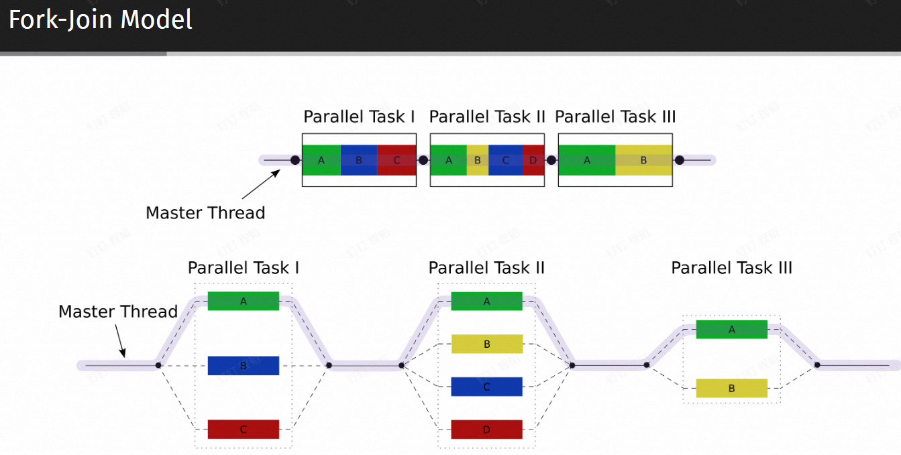
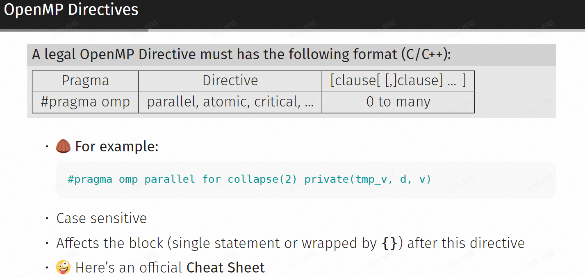
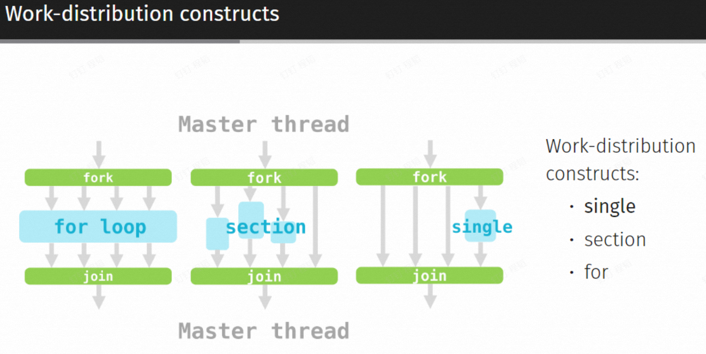
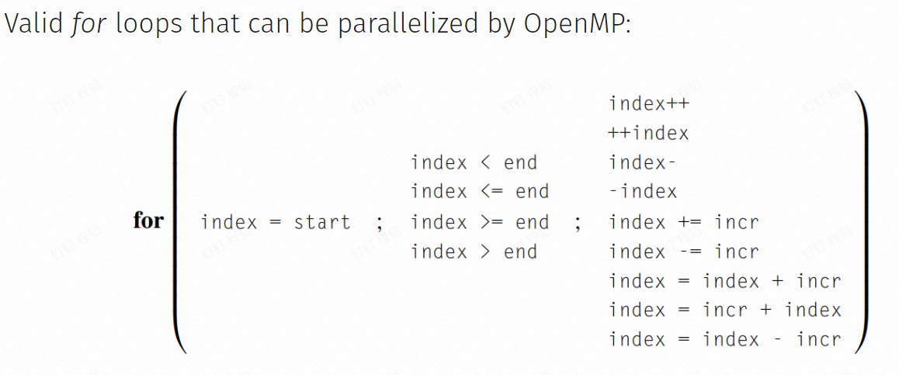
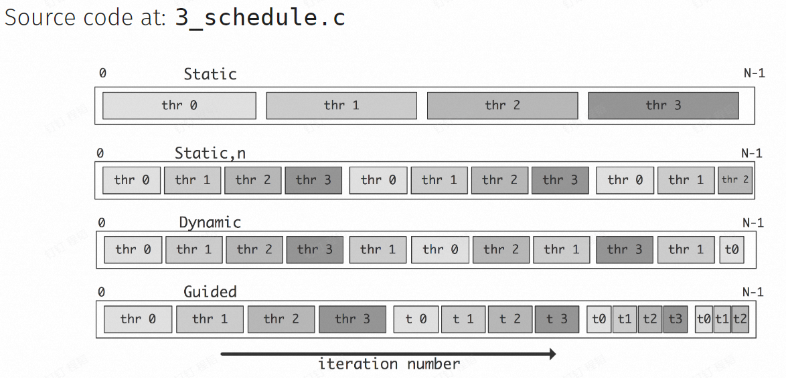
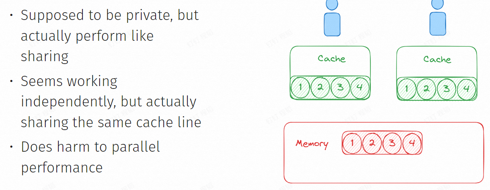

Lec.07 OpenMP,MPI 并行计算基础
约 1034 个字 • 127 行代码 • 预计阅读时间 4 分钟
OpenMP¶
Introduction¶
Shared Memory Parallel Model¶
- UMA (Uniform memory access)：所有核心访问一块内存
- NUMA (Non-~)：内存分组，跨组访问的速度较低 MPI imp
Tip
- OpenMP - thread - shared
- MPI - process - not shared
OpenMP¶
About OpenMP
- 3 language supported
- C/C++
- Fortran (scientific computation)
- provides us an easy way to transform serial programs into parallel
Hello OpenMP
#include <omp.h>
#include <stdio.h>
int main() {
printf("Welcome to OpenMP program!\n");
#pragma omp parallel
{
int ID = omp_get_thread_num();
printf("hello (%d)", ID);
printf("world (%d)\n", ID);
}
printf("Bye!\n");
return 0;
}
- Import omp header
- Preprocessing directive
- Parallel Region

Thread ID: omp_get_thread_num() 可以获取线程索引
OpenMP directives and constructs¶
Directives¶

- Official Cheat Sheet => OpenMP_reference.pdf (cheat-sheets.org)
Work-distribution constructs¶

Warning
加速倍数!=线程数
Overhead: any combination of excess or indirect computation time, memory, bandwidth, or other resources that are required to perform a specific task.
只能使用等差数列形式的 for loop

Loop Schedule¶
Unbalanced workload
#pragma omp parallel for
for(int i = 0; i < N; i++){
c[i] = f(i); // what if f is not O(1), e.g. O(N)
}
- Chunks: 循环中的子块，是任务分配的单位，可大可小
- Type: static, dynamic, guided, runtime, auto

static¶
- 就是直接按顺序均分
- pros: less overhead
- cons: unbalanced workload
dynamic¶
- 动态分配
- pros: more flexible
- cons: more overhead in scheduling
guided¶
- 相比 static: 在某些情况下可能得到更好的 workload balance
- 相比 dynamic: less overhead to dispatch tasks
- 实际上需要多次尝试哪个更好
Nested for loop¶
Matrix addition
#pragma omp parallel for collapse(2)
for(int i = 0; i < N; i++){
for(int j = 0; j < N; j++){
c[i][j] = a[i][j] + b[i][j];
}
}
Warning
It's not always a good idea to parallelize nested loops.
Think anout locality and data dependency before you use collapse clause.
总之，由于局部性，任务分配过于精细可能导致程序执行顺序乱跳，效率反而低
Shared Data and Data Hazards¶
Example: Data Hazards in Summation
#include <omp.h>
#include <stdio.h>
int main() {
int a[100];
int sum = 0;
// initialize
for (int i = 0; i < 100; i++) a[i] = i + 1;
#pragma omp parallel for
for (int i = 0; i <= 99; i++) {
sum += a[i];
}
printf("Sum = %d\n", sum);
}
CPU 执行加法
- 从内存读取到
- 执行加法计算
- 写回内存
- 如果 B 在 A 写之前读，那么 A 的结果会被 B 的结果覆盖
- 如果 A 的任务开始很早，但是写入很晚，可能覆盖其他所有任务
变量作用域¶
- Shared & private data in default
- directive 外面定义的就是共享变量，里面的就是私有变量
Explicit scpoes definition¶
private(sum)
#include <omp.h>
#include <stdio.h>
int main() {
int sum = 0;
int a[100];
// initialize
for (int i = 0; i < 100; i++) {
a[i] = i + 1;
}
#pragma omp parallel num_threads(4)
{
#pragma omp for private(sum)
for (int i = 0; i <= 99; i++) {
sum += a[i];
}
printf("Sum = %d\n", sum);
}
printf("Outside Sum: %d\n", sum);
}
firstprivate()在开始时从共享作用域读取lastprivate()在最后一个线程结束时写回同名共享变量
Resolve Data Hazard¶
Critical Section 临界区¶
critical section solution
#pragma omp parallel for
for(int i = 0; i <= 99; i++){
#pragma omp critical
{ sum += a[i]; }
}
printf("Sum = %d\n", sum);
- 可以包含多个语句
- 控制最多只能有一个线程进入临界区代码，即锁门排队
- 但在求和的问题，其实退化成了串行程序
Atomic Operation 原子操作¶
atomic operation solution
#pragma omp parallel for
for(int i = 0; i <= 99; i++){
#pragma omp atomic
sum += a[i];
}
printf("Sum = %d\n", sum);
- Atomic operation cannot be separated
- Only can be applied to one operation
- Limited set of operatiors supported
Reduciton 归约¶
reduction solution
#pragma omp parallel for reduction(+:sum)
for(int i = 0; i <= 99; i++){
sum += a[i];
}
printf("Sum = %d\n", sum);
- 对每个线程创建私有变量
- 最终对每个私有变量进行规约
- 规约方式有限
Comparison¶
- Critical Region: 软件层面上的锁机制
- Atomic: CPU 层面上的原子化指令调用，通常具有更高的性能
- Reduction: 在最终进行同步
Another Example: Naive GEMM¶
General Matrix Multiplication
for(int i = 0; i < N; i++){
for(int j = 0; j < N; j++){
for(int k = 0; k < N; k++){
c[i][j] = a[i][k] * b[k][j];
}
}
}
a solution
#pragma omp parallel for collapse(2) reduction(+ : c)
for (int i = 0; i < N; i++) {
for (int j = 0; j < N; j++) {
c[i][j] = 0;
for (int k = 0; k < N; k++) {
c[i][j] += a[i][k] * b[k][j];
}
}
}
Miscellaneous¶
Threads Synchronize¶
- Locking: wait unitl obtain the lock
- Barrier: wait untill all thread reach here
- MP 都有隐式的 barrier
nowait可以手动去掉每个并行区域的隐式 barrier
Nested Parallel Region¶
int f(int n, int* a, int* b, int* c){
#pragma omp parallel for
for(int i = 0; i < n; i++) c[i] = a[i] + b[i];
}
int main(){
...
#pragma omp parallel for
for(int i = 0; i < n; i++) f(n[i], a[i], b[i], c[i]);
}
- OpenMP 默认不会执行嵌套并行区域
- 可以使用
omp_set_nested来调整默认允许 - 建议重构代码
False Sharing¶

- cache 有最小读写单位 block，每次 A 对自己操作的值进行了修改，由于来自 memory 中相同的 block，A 会通过一种广播机制使得 B 修改 cache，实际上并没有共享
Summary: How to Optimize a program with OpenMP¶
- Where to parallelize: Profiling 通过软件分析程序热点，针对热点进行并行化
- Whether to parallelize: Analyze data dependency 访存依赖，不好并行
- How to parallelize: Analysis and Skills
- Sub-task Distribution
- Scheduling Strategy
- Cache and Locality
- Hardware Env
- Sometimes: transform recursion to iteration
- Get Down to Work: Testing
Tips¶
- Ensure correctness while parallelizing
- Be aware of overhead
- Check more details in official documents
- for example, OpenMP on GPU
MPI¶
Introduction¶
MPI, Message Passing Interface - OpenMPI - Intel-MPI - MPICH
Warning
执行时终端输出顺序和实际执行顺序没有关系。
Basic Concepts¶
Communicator¶
- A communicator defines a group of processes that have the ability to communicate with one another.
- 每个进程有一个 unique rank 通信域
- 默认是
MPI_COMM_WORLD
- 默认是
- 不保证公平性：可能总是无法接收到某些节点的信息
Point-to-Point Communication¶
Blocking Send and Receive¶
MPI_Status¶
Message Envelope¶
Communication Mode¶
- Buffer Mode
- Synchronous Mode
- Ready Mode
- Standard Mode
Example: Deadlock¶
- 0 和 1 发送之后都一直等待对方接受
- Solution
- 增加 if 语句
- 使用
MPI_Sendrecv - 使用非阻塞通信
MPR_Isend
Collective Communication¶
- Synchronizaiton
MPR_Barrier - BroadCast (One to All)
MPPI_Bcast- Why not Send and Receive 会比较慢，
MPI_Bcast使用了树形结构传递数据
- Why not Send and Receive 会比较慢，
- Scatter (One to All)
MPI_Scatter - Gather (All to One)
MPI_Gather - Allgather (All to All)
PI_Allgather - Reduce
MPI_Reuce